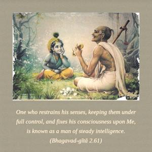
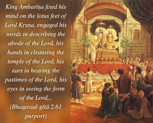
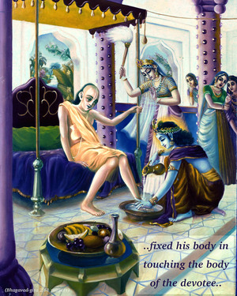
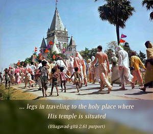

One who restrains his senses, keeping them under full control, and fixes his consciousness upon Me, is known as a man of steady intelligence.




That the highest conception of yoga perfection is Kṛṣṇa consciousness is clearly explained in this verse. And unless one is Kṛṣṇa conscious it is not at all possible to control the senses. As cited above, the great sage Durvāsā Muni picked a quarrel with Mahārāja Ambarīṣa, and Durvāsā Muni unnecessarily became angry out of pride and therefore could not check his senses. On the other hand, the king, although not as powerful a yogī as the sage, but a devotee of the Lord, silently tolerated all the sage’s injustices and thereby emerged victorious. The king was able to control his senses because of the following qualifications, as mentioned in the Śrīmad-Bhāgavatam (9.4.18–20):
sa vai manaḥ kṛṣṇa-padāravindayor
vacāṁsi vaikuṇṭha-guṇānuvarṇane
karau harer mandira-mārjanādiṣu
śrutiṁ cakārācyuta-sat-kathodaye
mukunda-liṅgālaya-darśane dṛśau
tad-bhṛtya-gātra-sparśe ’ṅga-saṅgamam
ghrāṇaṁ ca tat-pāda-saroja-saurabhe
śrīmat-tulasyā rasanāṁ tad-arpite
pādau hareḥ kṣetra-padānusarpaṇe
śiro hṛṣīkeśa-padābhivandane
kāmaṁ ca dāsye na tu kāma-kāmyayā
yathottama-śloka-janāśrayā ratiḥ
“King Ambarīṣa fixed his mind on the lotus feet of Lord Kṛṣṇa, engaged his words in describing the abode of the Lord, his hands in cleansing the temple of the Lord, his ears in hearing the pastimes of the Lord, his eyes in seeing the form of the Lord, his body in touching the body of the devotee, his nostrils in smelling the flavor of the flowers offered to the lotus feet of the Lord, his tongue in tasting the tulasī leaves offered to Him, his legs in traveling to the holy place where His temple is situated, his head in offering obeisances unto the Lord, and his desires in fulfilling the desires of the Lord … and all these qualifications made him fit to become a mat-para devotee of the Lord.”
The word mat-para is most significant in this connection. How one can become mat-para is described in the life of Mahārāja Ambarīṣa. Śrīla Baladeva Vidyābhūṣaṇa, a great scholar and ācārya in the line of the mat-para, remarks, mad-bhakti-prabhāvena sarvendriya-vijaya-pūrvikā svātma-dṛṣṭiḥ su-labheti bhāvaḥ. “The senses can be completely controlled only by the strength of devotional service to Kṛṣṇa.” Also, the example of fire is sometimes given: “As a blazing fire burns everything within a room, Lord Viṣṇu, situated in the heart of the yogī, burns up all kinds of impurities.” The Yoga-sūtra also prescribes meditation on Viṣṇu, and not meditation on the void. The so-called yogīs who meditate on something other than the Viṣṇu form simply waste their time in a vain search after some phantasmagoria. We have to be Kṛṣṇa conscious – devoted to the Personality of Godhead. This is the aim of the real yoga.